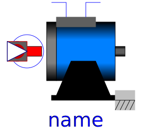
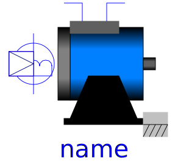
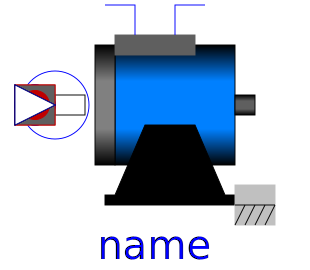

| Name | Description |
|---|---|
|  SM_PermanentMagnet | Permanent magnet synchronous induction machine |
|  SM_ElectricalExcited | Electrical excited synchronous induction machine with damper cage |
|  SM_ReluctanceRotor | Synchronous induction machine with reluctance rotor and damper cage |